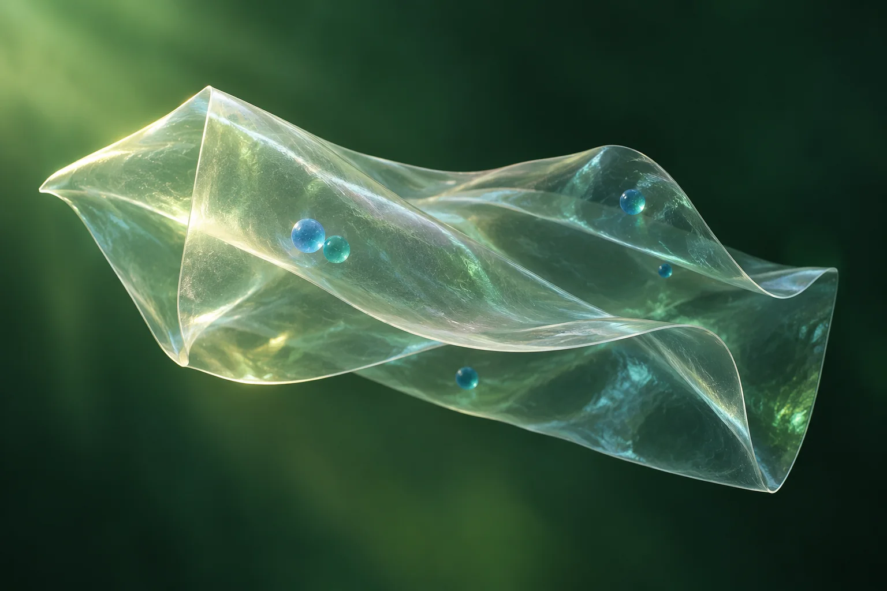

Research programme
Explore additive design, film testing, microencapsulation and the tomato case study through illustrated science.
View research ↗STUMAT brings green chemistry, polymer science and bio-inspired indicators together to explore smarter food contact materials.

Poly(3-hydroxybutyrate-co-3-hydroxyvalerate), or PHBV, is a bio-based polymer with potential for food packaging. Its brittleness and other performance limits make wider use difficult.
STUMAT investigates whether ferulic-acid-derived additives can tune PHBV films, and whether encapsulated Spirulina extracts can provide a visible response to changing food conditions.
See the approach ↗The project follows a pathway from additive design through encapsulation and film formulation to a food model.
Explore additive design, film testing, microencapsulation and the tomato case study through illustrated science.
View research ↗Explore the planned work phases and how STUMAT aims to share its research with different audiences.
View engagement ↗Learn about Dr. Muhammad Rehan Khan and the institutions bringing chemistry, materials and food science together.
About the researcher ↗STUMAT is a Marie Skłodowska-Curie Actions project coordinated by AgroParisTech Innovation, with INRAE as a partner organisation.
Official project record ↗